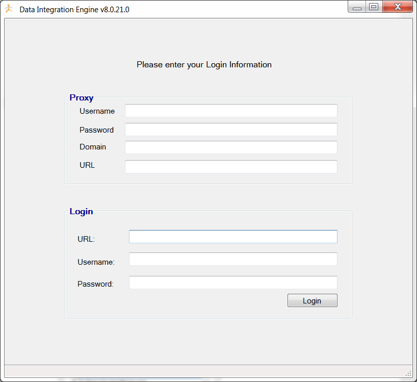
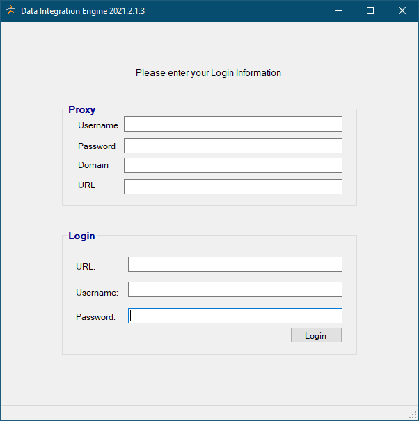
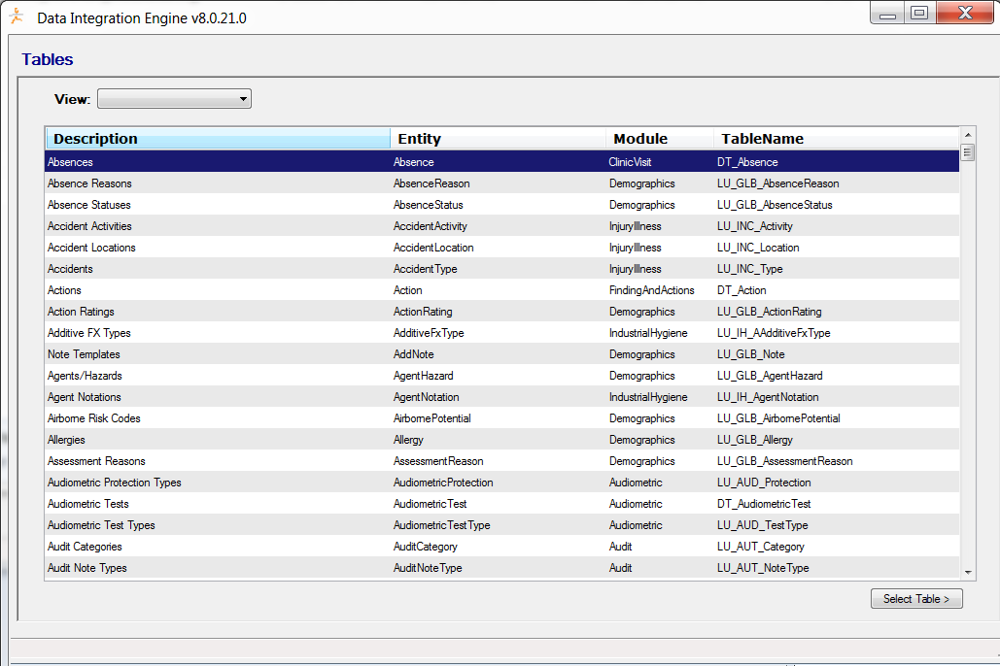
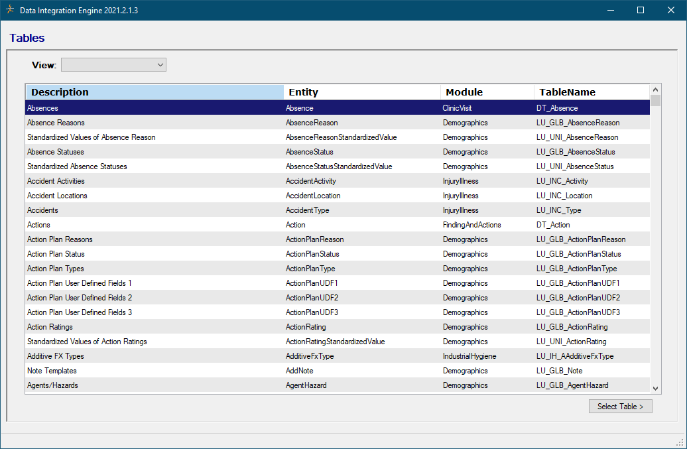
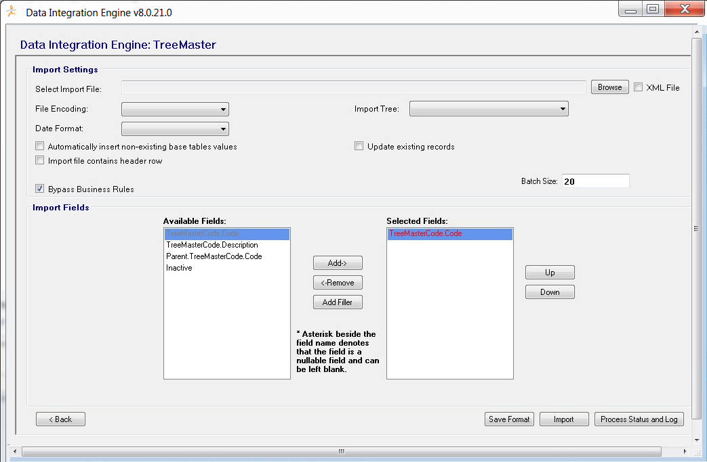
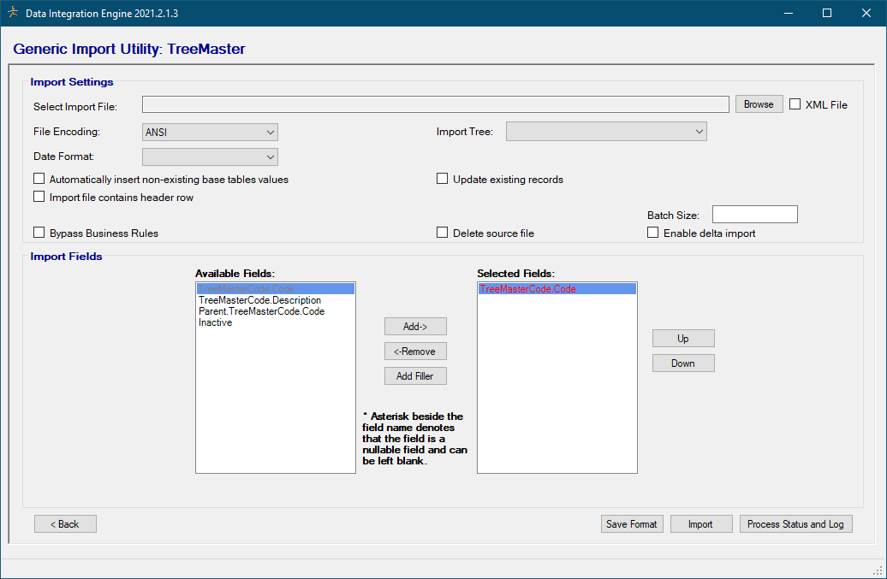

Configuring and Running the Data Integration Utility
Select Start > All Programs > Cority > Data Integration Utility. The Cority Data Integration Utility application will open.
Complete the Login Information form and click Login.


If the credentials entered in the previous step are valid and you have permission to use the Data Integration Utility service, the Cority Data Integration Utility GX screen will open displaying all importable tables within the Cority application. NOTE: Use the View menu to filter the tables by Data or Lookup tables.
To import a table, select a row and click Select Table. The Data Integration Utility screen will appear, displaying all import settings and available fields associated with the selected table.


Click Browse to select the import file. The import file name must begin with the application URL domain name. File encoding allows you to select the type of file to be imported. Auto-detect will automatically determine the file type, or you can specify if the file type is ANSI or UTF-8.
You can also apply settings such as Date Format to the file. Important: Import File and Date Format are required fields; the Bypass Business Rules option is only applicable to the TreeMaster and JobPosition lookup tables and the SafetyRASJobList data table.
In the Import Fields section, select the fields you want to import from the Available Fields list and click Add->. The fields will move to the Selected Fields list. Similarly, fields in the Selected Fields list can be removed by clicking <-Remove. Use theUp and Down buttons to rearrange the field order.
If you have a lot of data to import, it is recommended that you import the data in batches. This will significantly improve the performance of the import process as data will be imported in segments instead of all at once. As of 2020.1, the Data Integration Utility will automatically batch your file for you, so there is no need to manually split your file or provide a batch size.


To save the current configuration so it is automatically populated the next time you use the Data Integration Utility, click Save Format. This is required to run the Data Integration Utility as a scheduled task.
Once your import settings and fields are selected, click Import to begin the import process. To see the results of the import, click Process Status & Log. A ‘Data Integration Utility.log.txt’ file will be saved in the Data Integration Utility program folder. Note: The Started and Completed times in the ‘Data Integration Utility.log.txt’ file use Greenwich Mean Time (GMT). Before 2020.1 the import records/results would appear in the Process Status & Log after the import had fully completed, but as of 2020.1 they will appear there immediately as “Unprocessed” and change to “Added/Updated/Rejected” after the import is fully processed. Also, as of 2020.1, the Data Integration Utility will retry each import three times before failing. This is to circumvent potential connection issues that could arise during import and to give the import a better chance of succeeding.